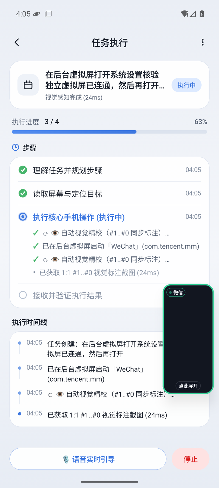
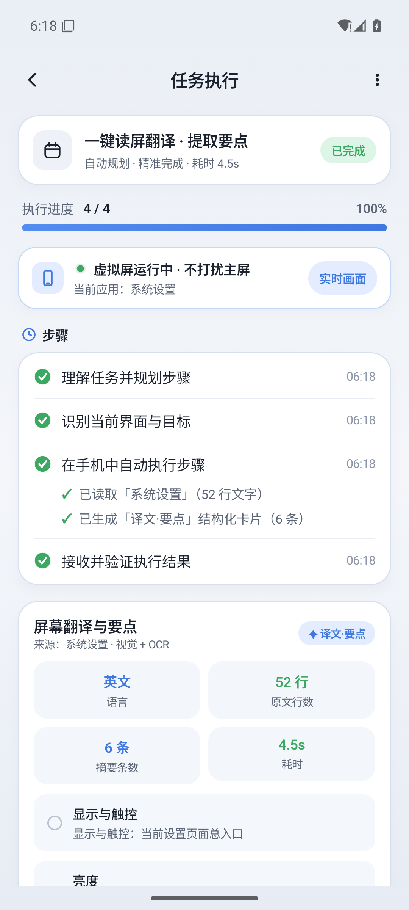
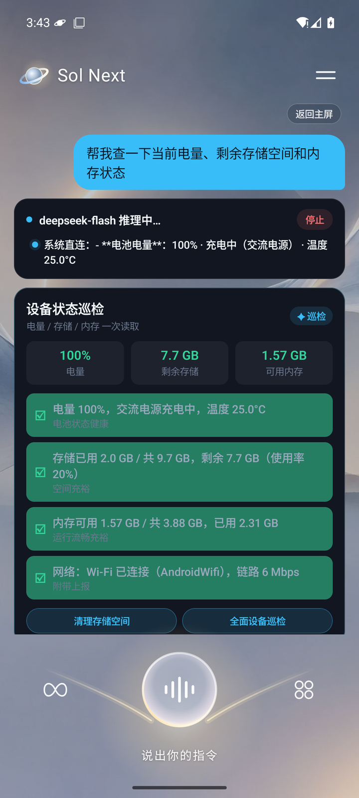

装在你手机上的免费开源 AI「行动替身」
全新独立产品 · 作者：许昌北海医院张重阳 · 微信扫码 / 小红书「SolNext用户群」欢迎交流
普通 AI 只能陪你聊天，而 Sol Next 9.0.7 能真正在手机后台 1:1 虚拟屏里替你点屏幕、跨 App 比价办事、4.5 秒读屏翻译、高清接打电话与打游戏——不用买 API Key（免费内置 Rust 加密 DeepSeek）、不用 Root、关 Wi-Fi 切 5G 永不断连、支持全球 20 国语言，彻底解决早期代理 Mika 的全部痛点。
💡 一、Sol Next 到底是什么？（30 秒看懂）
它不是又一个只会打字聊天的问答机器人，而是真正拥有「眼睛和双手」、能在后台静默替你操作手机 App 的开源智能体。
🤖 真动手，不只动嘴
你说一句话或打一行字，它自动看懂界面、打开美团/微信/系统设置等真实 App、一步步点击核验把事办完。
📱 后台 1:1 虚拟屏，不抢你屏幕
AI 在手机后台独立虚拟屏悄悄干活，你在前台继续刷抖音、回微信，互不打扰，随时可点开预览或说话叫停。
🎁 装好直接用，零配置门槛
免费内置纯 Rust 加密 DeepSeek V4.1 Flash（也可随时换自有 API Key），无需 Root、无需电脑、关 Wi-Fi 出门也不掉线。
🛡️ 付款/发微信必须先问你
身份证与银行卡发云前先在手机本地自动打码；凡涉及付款、转账、发微信、删除等敏感动作，一律暂停弹窗等你点头确认。
🎯 二、Sol Next 能帮你做什么？（6 大实用场景）
🛒 跨 App 比价 & 找美食外卖
试着说：“去美团搜附近评分最高的火锅店，整理前 3 家价格”后台自动打开多个 App 检索对比，整理成清晰摘要汇报；遇到加购或付款会自动停住等你确认。
⚡ 72ms 零 Token 手机秒控
试着说：“开启深色模式 / 看看电量存储 / 设明早 7:30 闹钟”高频系统指令走本地原生直通仅需 72 毫秒，不耗 Token 不离机；120+ 主流 App 支持 <250ms 瞬移直达。
📞 AI 高清代接 / 代打电话
试着说：“帮我接快递电话放驿站 / 帮我订今晚 7 点四人座”35 柱实时声纹 + 实时字幕 + 0.1ms 端侧反诈雷达；通话中随时发“悄悄话”指挥改口，或一键自己接管。
🌐 4.5 秒一键读屏翻译 & 20 语言
试着说：“把当前这个全英文界面翻译并提炼 5 条重点”4.5 秒读懂外文 App/网页生成结构化中文要点卡；界面自动匹配手机系统语言（全球 20 国语言 + 阿拉伯语 RTL）。
🎮 60Hz 多指游戏助手 & 棋牌
试着说：“帮我打一局斗地主 / 下国际象棋 / 金铲铲辅助”4 指并发多点触控 + 60Hz 视觉伺服：斗地主实测 3/3 全胜（32.5s）、Stockfish 国际象棋、《金铲铲》Rust 专属决策。
💻 桌面 AI 工具联动（CLI + MCP）
接入 Claude Code / Cursor / Codex 标准 MCP Server自带零依赖 Python CLI 与 stdio MCP Server，让桌面 AI 编程助手直接控制你的真机执行安装与自动化任务。
📖 三、怎么用？（新手 3 分钟保姆级上手）
下载并安装 APK
点击页面顶部绿色「国内高速直连镜像」下载 90MB ARM64 安装包（免梯子满速），支持 Android 10–16 与华为鸿蒙。
打开直接用（免配 Key）
已免费内置加密 DeepSeek V4.1 Flash，装完立刻能说话或打字！想用自己的 OpenAI/Claude/DeepSeek/通义千问 Key 随时去设置页切换。
30 秒开启操作手机权限
华为鸿蒙自动免无线调试 3 步搞定；安卓手机按图文引导填一次 6 位无线调试配对码（无需电脑/Root），连上后关 Wi-Fi 切 5G 永不断连！
说话或打字，看它干活
点击晨曦声波球说话或在底部打字下任务，可随时展开虚拟屏实时画面围观；付款或发微信前会自动弹窗等你点同意。
🎬 四、真实真机演示案例（Android 15/16 实拍）
所见即所得：每一张都是 Sol Next 真机运行时的真实截图与耗时记录。

案例 1 · 语音/文字一键下达
点击 60fps 晨曦声波球说话或直接打字，自带离线神经语音，零语音 Key 也能全双工对话。

案例 2 · 后台 1:1 虚拟屏自动操作
指令「开启深色主题」→ 后台独立虚拟屏实时点击并绿勾核验，完全不打扰前台屏幕。

案例 3 · 4.5 秒读屏翻译要点卡
4.5 秒读取 52 行全英文设置界面，自动输出 6 条结构化中文要点交互卡。
案例 4 · AI 通话 + 反诈盾 + 悄悄话
35 柱声纹 + 实时字幕 + 0.1ms 端侧反诈监测，支持通话中悄悄话指挥与一键本人接管。

案例 5 · 72ms 零 Token 原生巡检
查电量、存储与网络状态直接本地原生直出，72 毫秒秒现 Android 17 GenUI 交互卡。
案例 6 · 斗地主 3/3 全胜 (32.5s)
实时识牌与 60Hz 多指操控，横屏连胜 3 局；同步支持 Stockfish 象棋与金铲铲策略。
⚔️ 五、讲明白：Mika 到底差在哪？Sol Next 9.0.7 比它强在哪？
全新独立产品 · 用大白话把早期手机代理 Mika 的 8 大真实短板与 Sol Next 的全面超越一次讲透
❌ 为什么很多人用 Mika 很快卸载？（8 大硬伤）
- 装完根本用不了：必须自己注册买 API Key 配接口，普通人第一步就劝退。
- 关 Wi-Fi 无线调试秒断：一出家门切 5G 就废了；鸿蒙手机还要折腾复杂配对。
- 慢、费 Token、经常点歪：简单操作也要等云端截屏思考（~2.4 秒/步），缩放虚拟屏坐标漂移。
- 满屏工程日志 + 没离线语音：像极客调试面板，语音对话还得另买第三方接口。
- 隐私薄弱、微信易重发：明文整屏上云、内置重型浏览器/Linux 容器攻击面大、微信容易重复发消息。
- 单语言 + 手动找包龟速更新：海外多语用户用不了，国内下载慢且无更新弹窗说明。
✅ Sol Next 9.0.7 如何逐条降维超越？
- 装好免费直接用：内置纯 Rust 加密 DeepSeek V4.1 Flash（+ TLS 防抓包），随时可换任意 BYOK。
- 关 Wi-Fi 切 5G 100% 在线：锁死
adb_enabled=1+ 本机回环保活；鸿蒙免无线调试。 - 快 33 倍 + 0.0px 零漂移：
72ms零 Token 直通、120+ App<250ms瞬移、Rust 剪枝-97%、1:1 物理屏克隆。 - 零学习成本 + 端侧离线语音：晨曦轨道大白话步骤树 + 内置 16KB 离线 ASR/TTS（零语音 Key）。
- 金融级隐私 + 微信 0 重发：端侧隐私脱敏防火墙 + 微信九项加固（0 重发）+ 付款强制人工确认。
- 20 国语言 + 4 线程极速 OTA：按手机语言自动切换（含阿拉伯语 RTL）+ 自动弹窗说明 + 提速 3–8 倍。
| 核心维度 | 早期手机代理 Mika（短板） | Sol Next 9.0.7（全新独立旗舰） |
|---|---|---|
| 开箱即用与大模型 | ❌ 需自行购买并配置 API Key | ✅ 免费内置 Rust 加密 DeepSeek V4.1 Flash + 随时换 BYOK |
| 关 Wi-Fi 无线调试稳态 | ❌ 关闭 Wi-Fi 立即断连失效 | ✅ 锁死 adb_enabled + 本机回环，关 Wi-Fi 切 5G 100% 持续在线 |
| 华为鸿蒙系统适配 | ❌ 仍需繁琐无线调试配对 | ✅ 自动识别鸿蒙 OS 免无线调试，3 步直达满血体验 |
| 高频系统指令速度 | ❌ ~2,400 ms（读屏+LLM） | ✅ 72 ms · 0 Token（快 33×）+ 120+ App <250ms 瞬移 |
| 后台虚拟屏操控精度 | ❌ 缩放网格换算，易点偏 | ✅ Display 0 1:1 物理屏克隆（scale=1.0 · 0.0px 零误差） |
| 全球多语言支持 | ❌ 单一语言为主 | ✅ 全球 20 国语言按手机系统语言自动切换 + 阿拉伯语 RTL |
| 安全防线与微信稳态 | ❌ 明文上传 / 攻击面大 / 微信易重发 | ✅ 端侧脱敏防火墙 + 微信 0 重发九项加固 + 付款先问后行 |
| OTA 升级速度与体验 | ❌ 手动找包 / 单线程慢速 | ✅ 自动弹窗更新说明 + 多镜像竞速 + 4 线程加速（快 3–8×） |

微信扫码联系作者 & 加入官方用户群
使用微信扫描左侧二维码，即可直接添加作者好友，获取最新内测、反馈建议或技术交流。